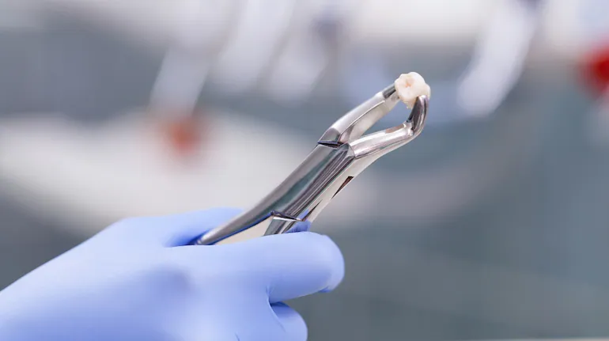

What is a Root Canal?
Posted on May 19, 2025
 A root canal treatment is a dental procedure to remove inflamed or infected pulp on the inside of the tooth which is then carefully cleaned and disinfected, then filled and sealed. Root canal treatment is designed to eliminate bacteria from the infected root canal, prevent reinfection of the tooth and save the natural tooth.
What happens during root canal treatment?
There's no need to be worried if your dentist or endodontist prescribes a root canal procedure to treat a damaged or diseased tooth. Millions of teeth are treated and saved this way each year, relieving pain and making teeth healthy again. Inside your tooth, beneath the white enamel and a hard layer called dentin, is a soft tissue called pulp. This tissue contains blood vessels, nerves and connective tissue, which help grow the root of your tooth during its development. A fully developed tooth can survive without the pulp because the tooth continues to be nourished by the tissues surrounding it. A modern root canal treatment is nothing like those old sayings! It's very similar to a routine filling and can usually be completed in one or two appointments, depending on the condition of your tooth and your personal circumstances. Getting a root canal is relatively painless and extremely effective. You'll be back to smiling, biting and chewing with ease in no time. Saving the natural tooth with root canal treatment has many advantages:- Efficient chewing
- Normal biting force and sensation
- Natural appearance
- Protects other teeth from excessive wear or strain
All About Root Canals
A root canal (also known as an endodontic treatment) is a serious procedure, but one that specialists handle every day. Before engaging in any type of dental work, it's important to know the facts about root canals.Is a root canal painful?
Since patients are given anesthesia, a root canal isn't more painful than a regular dental procedure, such as a filling or getting a wisdom tooth removed. However, a root canal is generally a bit sore or numb after the procedure, and can even cause mild discomfort for a few days.How do you know if you need a root canal?
Root canals are needed for a cracked tooth from injury or genetics, a deep cavity, or issues from a previous filling. Patients generally need a root canal when they notice their teeth are sensitive, particularly to hot and cold sensations. There are a few symptoms that mean you might need a root canal-- Severe pain while chewing or biting
- Pimples on the gums
- A chipped or cracked tooth
- Lingering sensitivity to hot or cold, even after the sensation has been removed
- Swollen or tender gums
- Deep decay or darkening of the gums